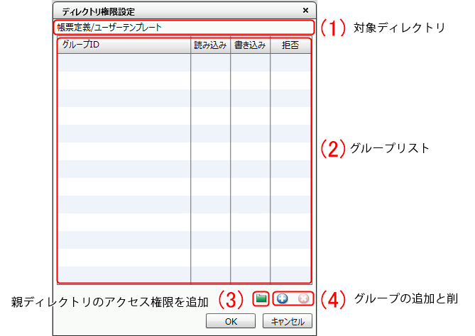
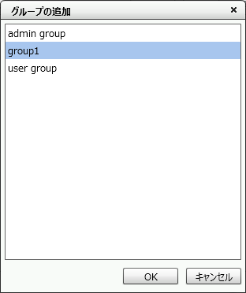
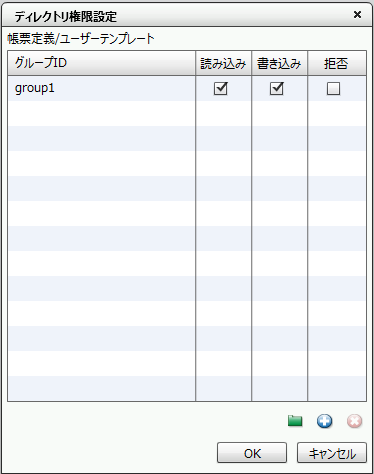
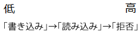
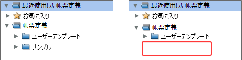
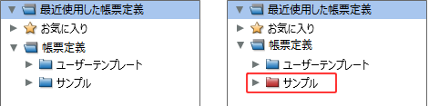

4.3.1. ディレクトリにアクセス権限を設定する
ディレクトリにはアクセス権限を設定できます。
アクセス権限はグループごとに設定します。設定したアクセス権限は、グループ内のすべてのユーザーに対して有効です。
ディレクトリに設定できるアクセス権限は次のとおりです。
読み込み
ディレクトリ内にある帳票定義の閲覧を許可します。
指定したグループに所属するユーザーのみディレクトリが表示されます。
書き込み
ディレクトリ内にある帳票定義の編集、および新規作成を許可します。
指定したグループに所属するユーザーのみディレクトリが表示されます。
拒否
ディレクトリを表示しません。
指定したグループに所属するユーザーのみディレクトリが表示されません。
ディレクトリのアクセス権限は、次の手順で指定します。
権限を設定したいディレクトリをディレクトリツリーから選択し、ツールバーの
 をクリックします。
をクリックします。［ディレクトリ権限設定］ダイアログで、をクリックします。

［グループの追加］ダイアログで、ディレクトリへのアクセス権限を設定するグループを選択し、［OK］ボタンをクリックします。

選択したグループに設定する権限（［読み込み］、［書き込み］、［拒否］）のチェックボックスをオンにします。
下図では「group1」に［書き込み］権限を設定しています。

参考
［書き込み］のチェックボックスをオンにした場合は、［読み込み］のチェックボックスもオンになります。
Ver.10.1以降の場合、グループリストには、選択中のディレクトリに設定されている権限のみが表示されます。
［OK］ボタンをクリックします。
権限を設定したディレクトリは赤色で表示されます。
グループのロールと権限
ロールが「管理者」のグループのディレクトリ権限は、常に［書き込み］権限です。
また、ロールが「一般ユーザー」のグループに［拒否］権限を設定すると、そのグループに所属するユーザーには、権限が設定されたディレクトリは表示されません。
ロールが「一般ユーザー」のグループが複数あり、それらのグループにユーザーが所属し、かつそれらのグループの同一ディレクトリへのアクセス権限が異なる場合は、次の順番でそのユーザーのアクセス権限が有効になります。

設定例を2つ示します。
設定例1
グループとユーザーの設定：グループ「group1」と「group2」にユーザー「user1」が所属する
ディレクトリ権限設定：「サンプル」ディレクトリで「group1」に［拒否］、「group2」に［書き込み］のチェックボックスをオンにする
「サンプル」ディレクトリへの「user1」のアクセス権限は［拒否］に設定され、下図のように、ユーザー「user1」には「サンプル」ディレクトリが表示されません。
「サンプル」ディレクトリへの「user1」のアクセス権限：設定前（左）と設定後（右）

設定例2
グループとユーザーの設定：設定例1と同じ
ディレクトリ権限設定：「サンプル」ディレクトリで「group1」に［書き込み］、「group2」に［読み込み］のチェックボックスをオンにする
「サンプル」ディレクトリへの「user1」のアクセス権限は［読み込み］に設定され、下図のように、「サンプル」ディレクトリが赤色で表示されます。
「サンプル」ディレクトリへの「user1」のアクセス権限：設定前（左）と設定後（右）

アクセス権限の継承
親ディレクトリの中に子ディレクトリを作成すると、親ディレクトリの権限が子ディレクトリに継承されます。権限を継承しているディレクトリは黄色で表示されます。
親ディレクトリとは異なる権限を子ディレクトリに設定した場合は、その子ディレクトリは赤色で表示されます。ただし、親ディレクトリの権限が［拒否］のときは、子ディレクトリには［拒否］以外は設定できません。
注意
親ディレクトリの権限を変更した場合、子ディレクトリに権限が設定された状態でも、親ディレクトリの権限を継承した状態に戻ります。
子ディレクトリに権限を設定すると継承は解消され、権限を設定しないグループの権限は「拒否」となります。子ディレクトリで権限を設定していないグループに対して、親ディレクトリの権限を継承したい場合には、をクリックします。このとき、同一ディレクトリ内にあるすでに権限を設定したグループに対しては、親ディレクトリの権限は継承されません。